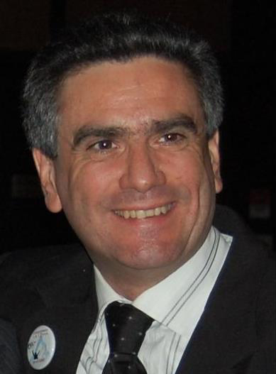
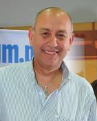

<div style="background-color: #daffd1;" class="d-flex justify-content-center">
    <div class="card" style="width: 70rem; margin: 5%; background-color: #ecffe8; box-shadow: 0px 5px 8px 0px gray; padding: 2%; padding-top: 1%;">
        <div class="card-body">
            <div class="row">
                <div class="col" style="text-align: center;">
                    <h1>Socios Fundadores</h1>
                </div>
            </div>
          <div class="row mt-2">
            <div class="col-sm-12 col-md-6" style="text-align: center;">
                
                <h5 class="card-title" style="text-align: center;">Eduardo A. Cancellieri</h5>
                <p style="text-align: justify;">Ingeniero en Petróleo con 30 años de experiencia en Ingeniería de Producción e Ingeniería de Proyectos en obras de infraestructura de campos petrolíferos, procesos de producción de petróleo y gas, e inyección de agua para disposal o recuperación secundaria, gerenciamiento de operaciones de producción de petróleo y gas en Argentina e internacionales en Perú y Venezuela, optimización de costos operativos con incorporación de tecnología y cambio de filosofías de trabajo, evaluación y desarrollo de personal, gestión presupuestaria de gastos e inversiones de planes de desarrollo de campos de petróleo y gas, gestión de JOA’s e implementación de sistemas de gestión basados en Normas Internacionales. Habilidades de liderazgo de equipos técnicos multidisciplinarios y funciones de soporte técnico en proyectos de inversión y de operaciones de activos en Argentina y evaluación y desarrollo de profesionales orientado a la excelencia técnica para responder con resultados óptimos a las necesidades de los clientes. Consultor y asesor sobre gestión operativa. Experiencia en mapeo de procesos por método de Brown Paper.</p>
            </div>
            <div class="col-sm-12 col-md-6" style="text-align: center;">
                
                <h5 class="card-title" style="text-align: center;">Horacio M. Mercado</h5>
                <p style="text-align: justify;">Técnico Mecánico y en Recursos Humanos con vasta experiencia en operaciones de petróleo y gas desarrollada durante 35 años en distintas áreas en la Argentina y Venezuela en empresas operadoras y prestadoras de servicio. Habilidades para análisis y relevamientos de variables operativas en todas las fases del proceso de producción, control de gestión de gastos e inversiones, certificación de Normas Internacionales de Calidad, Seguridad y Medio Ambiente y desarrollo de personal a través de programas de capacitación integrales. Liderazgo de equipos multidisciplinarios y gerenciamiento de servicios prestados a operadoras del mercado nacional. Amplia capacidad de negociación y resolución de conflictos organizacionales y sindicales.</p>
            </div>
        </div>
        <div class="row">
            <div class="col">
                <p style="text-align: center; margin-bottom: 0%;">------------------------------------------------------------------------</p>
                <h5 class="card-title" style="text-align: center;">Nuestro Equipo</h5>
                <div class="d-flex justify-content-center">
                    <p style="text-align: justify; margin-bottom: 0%; width: 500px;">Conformamos equipos multidisciplinarios acordes a cada proyecto con personas altamente calificadas para lograr el agregado de valor a su empresa.</p>
                </div>
                <p style="text-align: center;">------------------------------------------------------------------------</p>
            </div>
          </div>
        </div>
      </div>
</div>